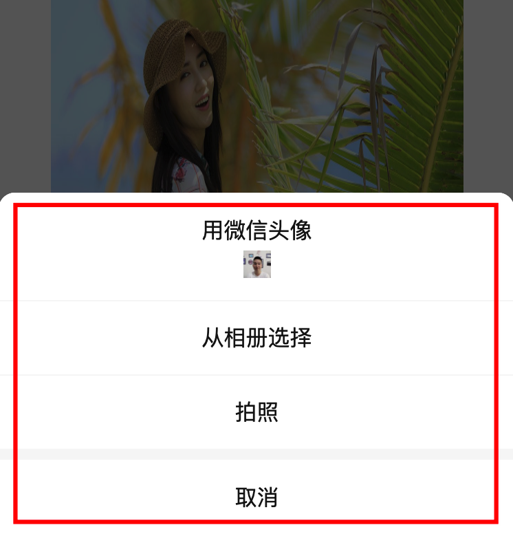
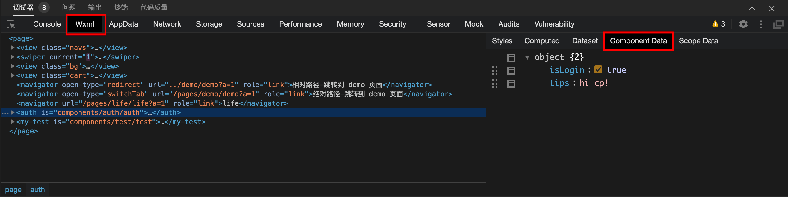
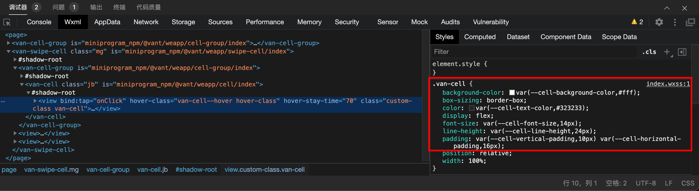
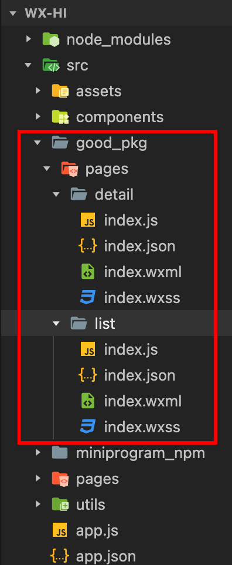

数据渲染是指通过模板语法把 data 中的数据展示到页面当中，小程序有一套专门的模板语法来实现数据的渲染。
1.1 双向绑定
小程序中通过插值语法，即双大括号实现数据的绑定，我们来将上一小节定义的数据渲染到页面当中：
// pages/index/index.js
// 调用 Page 函数
Page({
data: {
msg: '大家好，这是我的第一个小程序！',
},
// 方法
sayHi(name = '小明') {
console.log('你好' + name)
},
})
<!-- pages/index/index.wxml -->
<view class="msg">{{msg}}</view>
<!-- 重点注意，属性的绑定也是 {{}} -->
<input name="number" value="{{msg}}" />
上述代码就是小程序数据绑定的语法了，重点要注意对【属性的绑定】使用的仍然采用插值语法。
小程序支持简易的数据双向绑定，语法如下所示：
语法：model:value="{{变量名}}"
<input name="number" model:value="{{msg}}" />
大家要注意并不是所有的表单元素都支持数据双向绑定，其中 input、textarea、slider 组件可以支持。
扩展-属性绑定
对元素上的属性进行动态绑定
语法：属性名="{{data}}"
data: {
addClass: true,
url:'/pages/meng/index',
}
<view class="{{addClass?'className1':'className2'}}">
<text>动态class</text>
<navigator url="{{url}}">go</navigator>
</view>
1.2 列表渲染
如果 data 中有一个数组类型的列表数据，我们要如何渲染出来呢？
小程序提供了一个指令 wx:for 类似于 Vue 中的 v-for，通过一个小例子来学习：
// pages/index/index.js
// 调用 Page 函数
Page({
data: {
msg: '大家好，这是我的第一个小程序！',
number: 1,
students: [
{ id: 1, name: '小明', age: 18, gender: '男' },
{ id: 2, name: '小红', age: 17, gender: '女' },
{ id: 3, name: '小刚', age: 19, gender: '男' },
{ id: 4, name: '小丽', age: 18, gender: '女' },
{ id: 5, name: '小米', age: 19, gender: '女' },
],
},
// 方法
sayHi(name = '小明') {
console.log('你好' + name)
},
})
1.2.1 基本的语法格式
语法：wx:for="{{数据名称}}"
v-pre
wx:for 的语法格式为 wx:for="{{ 数据名称 }}" ，并且内置默认通过
index 获取数组的索引值，item 访问数组的单元值，如下代码所示：
<!-- pages/index/index -->
<view class="students">
<view class="item">
<text>序号</text>
<text>姓名</text>
<text>年龄</text>
<text>性别</text>
</view>
<view class="item" wx:for="{{students}}">
<text>{{index + 1}}</text>
<text>{{item.name}}</text>
<text>{{item.age}}</text>
<text>{{item.gender}}</text>
</view>
</view>
上述代码中 index 读取的是数组的索引值，item 读取的是数组的单元。
在使用 wx:for 时会收到一个警告，如下图：

上述警告是由于在使用 wx:for 时没有指定 wx:key 属性，这个 wx:key 属性的作用于 Vue
中一样的，但是语法稍有不同，大家一定要注意，如下所示：
<!-- pages/index/index -->
<view class="students">
<view class="item">
<text>序号</text>
<text>姓名</text>
<text>年龄</text>
<text>性别</text>
</view>
+ <view class="item" wx:for="{{students}}" wx:key="name">
<text>{{index + 1}}</text>
<text>{{item.name}}</text>
<text>{{item.age}}</text>
<text>{{item.gender}}</text>
</view>
</view>
上述代码中 wx:key 属性的值要求必须具有唯一性，使用时分成两种情形：
- 数组单元为简单类型数据时，使用
*this指定为wx:key的值 - 数组单元是对象类型时，只要写对象的属性名
1.2.2 自定义访问单元值和索引值
通过
wx:for-index和wx:for-item来分别指定如何访问数组的索引值和单元值，如下代码所示：
语法：wx:for-index="索引名" wx:for-item="单元名"
<!-- pages/index/index -->
<view class="students">
<view class="item">
<text>序号</text>
<text>姓名</text>
<text>年龄</text>
<text>性别</text>
</view>
<view class="item" wx:for="{{students}}" wx:for-index="key" wx:for-item="student">
<text>{{key + 1}}</text>
<text>{{student.name}}</text>
<text>{{student.age}}</text>
<text>{{student.gender}}</text>
</view>
</view>
上述代码中分别指定了 key 获取的是数组的索引值，student 获取的是数组的单元值。
1.3 条件渲染
1.3.1 wx:if
在对数据进行渲染时经常需要根据条件来处理，如后台暂无数据提示，可以使用
wx:if来实现，我们来看具体的用法：
语法：wx:if="{{布尔值}}"
<!-- pages/index/index.wxml -->
<!-- 省略前面小节的代码 -->
+ <view class="students" wx:if="{{students.length>0}}">
<view class="item">
<text>序号</text>
<text>姓名</text>
<text>年龄</text>
<text>性别</text>
</view>
<view
class="item"
wx:for="{{students}}"
wx:key="name"
>
<text>{{index + 1}}</text>
<text>{{item.name}}</text>
<text>{{item.age}}</text>
<text>{{item.gender}}</text>
</view>
</view>
+ <view wx:else> 暂无数据... </view>
1.3.2 hidden
除了使用
wx:if来控制元素的显示外，还可以使用hidden属性来实现相同的结果。
// pages/index/index.js
// 调用 Page 函数
Page({
data: {
seen: true,
},
toggle() {
// 切换 seen 的值
this.setData({
seen: !this.data.seen,
})
},
})
<!-- 条件数据渲染 -->
<button type="primary" bind:tap="toggle">显示/隐藏</button>
<view wx:if="{{seen}}">{{msg}}</view>
<view hidden="{{!seen}}">{{msg}}</view>
对比 wx:if 和 hidden 二者的区别：
-
wx:if在条件为true时会将内容渲染出来，否则不会进行渲染，是通过【添加/删除】节点的方式来实现的。 -
hidden在条件为true时会隐藏内容，否则会显示内容，是通过display样式属性来实现的。
1.3.3 block
block是小程序中一个特殊的标签，用于分组控制页面元素的渲染，通过会配合wx:for和wx:if来使用，下面举例来说明：
需求：假如满足某个条件是显示多个结构。
方案：就可以使用block包裹需要控制的多个结构进行控制
<block wx:if="{{isShow}}">
<view class="msg">{{msg}}</view>
<input name="number" value="{{number}}" />
<view class="students">...</view>
</block>
tip 提示: block 标签本身并不会被渲染到页面当中，它一般只用于分组控制内容的渲染，也可以用 wx:for
生命周期
我们都知道生命周期是一组名称固定且会自动被调用执行的函数，在开发小程序时也有专门的的生命周期函数，分为应用级别、页面级别和组件级别3种类型，我们先学习应用级别和页面级别的生命周期。
2.1 应用级别
首先要知道应用级别的生命周期函数定义在
app.js当中，且生命周期函数的名称及执行情况如下表所示：
| 生命周期 | 必填 | 说明 |
|---|---|---|
| onLaunch | 否 | 监听小程序初始化，全局只会执行 1 次 |
| onShow | 否 | 监听小程序启动或切前台 |
| onHide | 否 | 监听小程序切后台 |
2.1.1 基本语法
通过代码演示用法：
// app.js
App({
onLaunch() {
console.log('小程序启动了，只会执行 1 次！')
},
onShow() {
console.log('小程序处于前台状态！')
},
onHide() {
console.log('小程序处于后台状态！')
},
})
tip 提示:
-
用户在点击右上角的胶囊关闭小程序时，小程序并示被销毁，只是将小程序置于后台运行了，因此小 onLaunch 并不会重复执行。当小程序执行停留在后台约5分钟后小程序会自动被销毁，再次打开小程序时 onLaunch 会再次被执行。
-
通过应用级别的生命周期可以进行一些全局性的设置，如检测用户的登录状态（后期项目中会用到）、获取小程序的场景值等。
2.1.2 场景值
所谓的场景描述的是用户打开小程序的方式，如扫码、搜索、分享等，并且每个场景都对应了一个数值，即场景值
根据这个场景值来判断用户打开小程序的方式，进而分析用户的行为，常见的场景值如下表所示：
| 场景值 ID | 说明 |
|---|---|
| 1001 | 发现栏小程序主入口 |
| 1011 | 扫描二维码 |
| 1007 | 单人聊天会话中的小程序消息卡片 |
获取小程序的声景值只能在全局生周期函数 onLaunch、onShow 中获取，代码如下所示
javascript
// app.js
App({
onLaunch(params) {
// 1001 发现栏小程序主入口
// 1011 扫描二维码
// 单人聊天会话中的小程序消息卡片
console.log(params.scene)
},
onShow(params) {
// 也可以获取场景值ID
console.log(params.scene)
},
})
获取到场景值后就可以确定用户是以何种方式打开小程序了，进而分析用户的行为，帮助管理者制订合理的营销方案。
举例说明：比如通过场景值发现最近一段时间大量用户是通过分享的方式打开小程序的，那说明用户分享的意愿很强，营销活动有成效，如果用户主动去搜索小程序，说明小程序的知名度和受欢迎程序都比较高等。
2.2 页面级别
页面级别的生命周期函数写在页面对应的页面
.js当中：
| 生命周期 | 必填 | 说明 |
| onLoad | 否 | 监听页面加载，只会执行 1 次 |
| onShow | 否 | 监听页面显示 |
| onReady | 否 | 监听页面初次渲染完成，只会执行 1 次 |
| onHide | 否 | 监听页面隐藏 |
| onUnload | 否 | 监听页面卸载 |
2.2.1 基本语法
以首页的 .js 为例演示用法：
// pages/index/index.js
Page({
// ...省略前面小节的代码
onShow() {
// 其次执行
console.log('首页处于显示状态...')
},
onReady() {
console.log('首页初次渲染完成了...')
},
onLoad() {
// 最先执行
console.log('首页面加载完毕...')
},
onHide() {
console.log('首页处于隐藏状态...')
},
onUnload() {
console.log('首页面即将卸载...')
}
})
通过上述代码的演示大家要掌握页面生命周期的如下特点：
- onLoad 和 onReady 只会执行 1 次
- onShow 和 onHide 会重复执行
- 普通链接跳转及切换 Tab 页面不会卸载，页面处理隐藏的状态
在开发中页面的生命周期函数会使用非常频繁，根据生命周期的不同特性用法也千变万化，我们先来看 onLoad 的一般用法，其它生命周期的应用后续开发中结合需求再做介绍。
2.2.2 获取地址参数
小程序在进行页面跳转时可以在跳转地址上通过
?来拼凑参数，这些参数通过onLoad生命周期函来获取，用法如下所示：
我们在首页面添加一个链接使其跳转到 logs 页面，并且在地址上通过 ? 来拼凑一些参数：
<!-- page/index/index.wxml -->
<!-- 省略前面小节的代码 -->
<navigator url="/pages/logs/logs?name=小明&age=18">跳转到日志页面</navigator>
小程序中通过地址参数与网页是一致的，格式为 ?key1=value1&key2=value2，上述示例只是介绍基本用法，参数并没有实际的意义。
思考：地址上拼凑的参数是传给哪个页面的？
很容易判断是传给日志页面的，因此获取地址上的参数应该到日志页面的 onLoad 中获取，代码如下所示：
// page/logs/logs.js
Page({
onLoad(params) {
// 查看地址中的参数
console.log(params)
},
})
注意⚠️：open-type="switchTab"模式跳转不支持query参数
内置 API
小程序 API 是小程序内置提供的一系列的方法，通过这些方法能够实现许多的功能，比如网络请求、消息提示、本地存储、微信登录、微信支付等，这些 API 通过全局对象
wx 进行调用。
3.1 网络请求
wx.requestAPI 是用来发起网络请求的，类似于网页中的ajax，其用法如下所示：
语法：wx.request(config:object)
// pages/index/index.js
// 小程序发起网络请求（调用接口）的方法
wx.request({
// 接口地址
url: 'api/path/xxx',
// 请求的方法
method: 'GET｜POST|PUT',
// 请求时的数据
data: {},
success(res) {
// 成功响应的回调
},
// ...
})
3.1.1 获取学生列表
我们以获取学生列表数据为例来练习 wx.request 的使用：
// pages/index/index.js
Page({
// ...前面小节代码省略
onLoad() {
// 页面加载完成即获取学生列表
this.getStudentList()
},
// 获取学生表表
getStudentList() {
// 调用小程序 api
wx.request({
url: 'https://mock.boxuegu.com/mock/3293/students',
method: 'GET',
success: (res) => {
console.log(res)
},
})
},
})
非常不幸，上述代码的执行时会报告一个错误，如下图：

小程序规定 wx.request 调用接口的服务器地址（域名）必须事先在小程序的管理后台进行设置，否则是不允许发起网络请求，如何解决这个问题呢？有两种方式：
- 在小程序管理后台进行设置
- 在小程序开发工具中进行设置
管理后台设置步骤见下图：

warning 注意:
域名有个严格的要求：必须是 https 协议且已备案！
在开发工具中设置步骤如下：

warning 注意: 在开发工具中设置的方式只适用于开发环境，即只能在小程序开发者工具中生效。
调用 wx.request 发起请求成功响应后返回的数据格式为：
{
cookies: []
data: {}
errMsg: "request:ok"
header: {}
statusCode: 200
}
tip 提示: 上述演示接口返回的学生列表信息是随机生成的，即每次调用的结果都是不相同的。
3.2 界面交互
小程序还提供了一些用于界面交互的 API，如加载提示、信息反馈、确认框等。
3.2.1 加载提示
加载提示框常配合网络请求来使用，用于增加用户体验，对应的 API 有两个，分别为：
wx.showLoading显示加载提示框wx.hideLoading隐藏加载提示框
它们的语法如下：
// 显示加载提示
wx.showLoading({
title: '正在加载...',
mask: true,
})
// 隐藏加载提示
wx.hideLoading()
结合上一节获取学生列表来演示这两个 API 的使用：
// pages/index/index.js
Page({
// ...省略前面小节代码
// 获取学生表表
getStudentList() {
// 显示提示框
// + wx.showLoading({
// + title: '正在加载...'
// + })
// 发起请求
wx.request
url: 'https://mock.boxuegu.com/mock/3293/students',
method: 'GET',
// 这里注意因为 this 的原因，推荐使用箭头函数
success: (res) => {
this.setData({
// 更新 students 数组
students: res.data.result,
})
},
complete() {
// 隐藏提示框
// wx.hideLoading()
},
})
},
})
在调用 wx.showLoading 时可以传入以下参数：
title指定显示的文字提示内容（不能省略）mask提供一个透明层阻止对页面其它内容进行操作success显示加载提示框成功后的回调（很少用到）fail显示加载提示框失败后的回调（很少用到）complete显示加载提示框完成后的回调（包括成功和失败两种情况）
3.2.2 信息反馈
信息反馈是指根据用户的某些操作来告知操作的结果，如用户点击加入购物车，提示用户添加成功，用户提交表单提示用户表单验证的结果等，对应的 API 是
wx.showToast
其语法如下：
wx.showToast({
title: '姓名只能为汉字!',
duration: 2000,
mask: true,
icon: 'success'
})
以表单验证举例说明 API 的使用：
<!-- pages/index/index.wxml -->
<!-- 省略了部分代码 -->
<input type="text" model:value="{{username}}" placeholder="请填写您的姓名" />
<button type="primary" bind:tap="submitForm">提交</button>
// 调用 Page 函数
// pages/index/index
Page({
data: {
username: '',
},
submitForm() {
console.log(this.data.username);
// 验证用户名只能由英文、数字、下划线组成
const reg = /^\w+$/;
// 验证结果
const valid = reg.test(this.data.username.trim());
// 提示验证结果
if (!valid) {
return wx.showToast({
title: '用户名只能由英文、数字、下划线组成!',
icon: 'none',
});
}
},
});
在调用 wx.showToast 时可以传入以下参数：
title指定显示的文字提示内容（不能省略）mask提供一个透明层阻止对页面其它内容进行操作icon指定图标类型duration指定信息反馈的显示时长
3.3 本地存储
小程序中也能够像网页一样支持本地存储数据，用于在本地存一些临时性的数据，比如包含的用户登录状态 token 等，其包含以下 4个主要的 API：
wx.setStorageSync在本地存入一个数据wx.getStorageSync读取本地的一个数据wx.removeStorageSync删除本地存储的一个数据wx.clearStorageSync清空本地存储的数据
tip 提示:
在小程序中 Sync 结尾的 API 指的是同步方式执行，同步方式执行的 API 在使用时简洁比较好，但缺点是同步会阻塞程序执行，执行效率上相较异步版本要差一些。
3.3.1 存入数据
如下代码所示调用 API
wx.setStorageSync在小程序本地存入数据
// pages/storage/index.js
Page({
// 存入本地数据
setStorage() {
wx.setStorageSync('name', '小明')
// 可以直接存入对象，无需 JSON.stringify 处理
wx.setStorageSync('user', { name: '小明', age: 18 })
},
})
tip
注意在小程序中本地存储可以直接存入对象或数组类型的数据，无需要 JSON.stringify 进行处理。
3.3.2 读取数据
如下代码所示调用 API
wx.getStorageSync读取本地存储中的数据
// pages/storage/index.js
Page({
// 存入本地数据
setStorage() {
wx.setStorageSync('name', '小明')
// 可以直接存入对象，无需 JSON.stringify 处理
wx.setStorageSync('user', { name: '小明', age: 18 })
},
// 读取本地数据
getStorage() {
const name = wx.getStorageSync('name')
// 对象类型的数据不必 JSON.parse 处理
const user = wx.getStorageSync('user')
},
})
tip
注意由于存入本地的数据并没有进行 JSON.stringify 处理，因此取出来的数据也不必进行 JSON.parase 处理了。
3.3.3 删除数据
如下代码所示调用 API
wx.removeStorageSync删除本地存储的数据
// pages/storage/index.js
Page({
// 存入本地数据
setStorage() {
wx.setStorageSync('name', '小明')
// 可以直接存入对象，无需 JSON.stringify 处理
wx.setStorageSync('user', { name: '小明', age: 18 })
},
// 读取本地数据
getStorage() {
const name = wx.getStorageSync('name')
// 对象类型的数据不必 JSON.parse 处理
const user = wx.getStorageSync('user')
},
// 删除数据
removeStorage() {
wx.removeStorageSync('name')
},
// 清空数据
clearStorage() {
wx.clearStorageSync()
},
})
3.3.4 清空数据
如下代码所示调用 API
wx.clearStorageSync删除本地存储的数据
// pages/storage/index.js
Page({
// 存入本地数据
setStorage() {
wx.setStorageSync('name', '小明')
// 可以直接存入对象，无需 JSON.stringify 处理
wx.setStorageSync('user', { name: '小明', age: 18 })
},
// 读取本地数据
getStorage() {
const name = wx.getStorageSync('name')
// 对象类型的数据不必 JSON.parse 处理
const user = wx.getStorageSync('user')
},
// 删除数据
removeStorage() {
wx.removeStorageSync('name')
},
// 清空数据
clearStorage() {
wx.clearStorageSync()
},
})
除了上述的4个 API 外，还有4个与之对应的异步版本的API：
wx.setStorage在本地存入一个数据wx.getStorage读取本地的一个数据wx.removeStorage删除本地存储的一个数据wx.clearStorage清空本地存储的数据
调用异步方式的 API 传入的是一个对象类型的参数：
Page({
setStorage() {
wx.setStorage({
key: 'name',
data: '小明'
})
// 等同于
wx.setStorage('name', '小明')
}
})
tip 提示:
在小程序中 Sync 结尾的 API 指的是同步方式执行，同步方式执行的 API 在使用时简洁比较好，但缺点是同步会阻塞程序执行，执行效率上相较异步版本要差一些。
3.4 头像昵称填写
小程序开发过程中获取用户昵称和头像是比较常见的功能，新建一个页面 profile 来演示该功能的实现步骤。
3.4.1 用户头像
获取用户头像必须用到
button组件，且用户必须要主动点击button按钮，以下是button的使用细节：
- 设置
button的属性open-type值为chooseAvatar - 监听
button的chooseavatar事件
warning 注意: open-type 的属性值 chooseAvatar (有大写字母)，事件类型 chooseavatar (全部小写字母)。
说明⚠️：基础库2.21.2支持
如上图所示用户点击了按钮后会弹出一个选择列表，无论是选择微信头像、相册选择、还是拍照都会触发事件 chooseavatar，在事件回调函数中来获取用户头像的图片地址数据。
在事件回调 getUserAvatar 中获取到用户的头像地址，通过这个地址就可以将用户设置的头像展示到页面当中了。
<view class="profile">
<image src="{{profile.avatarUrl}}"></image>
<button type="warn" open-type="chooseAvatar" bindchooseavatar="getUserAvatar">
头像
</button>
</view>
// pages/profile/index.js
Page({
data: {
profile: {
avatarUrl: '/static/images/avatar.png',
nickName: '微信用户',
},
},
// 获取用户头像
getUserAvatar(ev) {
// 获取头像对应的地址
// console.log(ev.detail.avatarUrl)
this.setData({
'profile.avatarUrl': ev.detail.avatarUrl,
})
},
})
同学们有没有注意到上面代码中调用 setData 时使用了 'profile.avatarUrl'
，这是小程序特别支持更新数据的用法，它等同于下面的写法：
this.setData({
// 这种写法没有上述语法简洁
profile: {
avatarUrl: ev.detail.avatarUrl,
},
})
此时得到的头像地址是临时地址，只能在小程序内部使用，要实现永久存储需要将这个图片上传给自已的服务端，文件上传会用到 wx.uploadFile。
// pages/profile/index.js
Page({
// 省略部分代码...
getUserAvatar(ev) {
this.setData({
'profile.avatarUrl': ev.detail.avatarUrl,
});
// 上传临时文件
wx.uploadFile({
url: 'http://ajax-api.itheima.net/api/file',
filePath: ev.detail.avatarUrl,
name: 'avatar',
success: (res) => {
console.log(res);
},
});
},
})
选择头像组件存在的问题❓：
-
拍照报错提示："设置失败，请重试"
-
相册选取照片报错提示："无法使用该头像"
3.4.2 用户昵称
获取用户昵称必须用到
input组件，当input获得焦点后小程序会自动展示用户的昵称 以下是input的使用细节：
- 设置
input的type属性值为nickname - 监听
input组件的input、blur、change等事件获取表单中的值

如上图所示当 input 组件获得焦点时，页面的底部自动弹出用户默认的昵称，用户选择后会自动填入表单当中，用户也可以在表单中填写内容对昵称进行自定义。
那如何获取用户在表单中填写的用户昵称呢？
用户在表单中填写的内容（昵称）需要事件回调中通过失去焦点blur事件对象来获取
<input type="nickname" bind:blur="getUserNickName" />
在事件回调 getUserNickName 中获取到用户昵称，然后将昵称展示到页面当中。
// pages/profile/index.js
Page({
data: {
profile: {
avatarUrl: '/static/images/avatar.png',
nickName: '微信用户',
},
},
// 获取用户头像...
// 获取昵称
getUserNickName(ev) {
// 获取用户设置的昵称
this.setData({
'profile.nickName': ev.detail.value,
})
},
})
练习：将获取到的用户头像和昵称存入小程序本地。
3.5 路由
小程序中的路由其实单纯只是页面的跳转，一般在页面中使用 navigator 组件来实现，也有很多场景需要在 js 中根据逻辑的执行结果跳转到某个页面，比如检测到用户尚未登录就跳转到登录页面。
3.5.1 wx.navigateTo
wx.navigateTo跳转到一个新的页面，会新增一种历史记录
// /pages/router/index.js
Page({
// 普通的跳转
navigateTo() {
wx.navigateTo({
url: '/pages/logs/logs?name=小刚&age=19',
success() {}
});
},
})
通过 wx.navigateTo 跳转页面通过左上角的能够实现返回操作，如果要跳转的页面路径是一个 tabBar 的页时，不能使用 wx.navigateTo。
3.5.2 wx.redirectTo
wx.redirectTo 跳转到一个新的页面，不会新增一种历史记录，替换掉当前页面。
javascript
// /pages/router/index.js
Page({
// 和 navigateTo 很类似，区别在于不会新增历史记录
redirectTo() {
wx.redirectTo({
url: '/pages/logs/logs?name=小刚&age=19',
});
},
});
3.5.5 wx.navigateBack
wx.navigateBack 返回页面。
// /pages/router/index.js
Page({
// 返回页面
navigateBack() {
wx.navigateBack();
},
});
3.6 其它
总结：
-
小程序中大部分的 API 都是异步方式执行，异步 API 传入的都是对象类型的参数，且都可以传入
success、fail、complete回调函数。 -
也有少部分 API 是同步方式执行，同步方式的 API 有个特点就是均以
Sync结尾。 - 善于利用文档
npm 支持
4.1 默认构建
小程序不能直接使用在 npm 下载的模块包，必须经过小程序开发者工具进行构建后才可以使用，这一节我们来学习支持 npm 模块包的步骤：
- 打开终端窗口
- 安装一个 npm 模块包，以
dayjs为例
`bash
创建 package.json
npm init -y
安装一个模块
npm install dayjs这一步操作是与以往的 npm 模块安装没有任何的区别，会将模块安装到 node_modules 当中，但是下载的模块无法直接导入到小程序中，如下图所示：
- 构建 npm，步骤如下图所示
构建 npm 的结果会创建一个新的目录 miniprogram_npm 把构建后的 npm 模块放到了这个目录之下，此时在小程序中便可以成功导入 npm 的模块包了。
4.2 自定义构建
默认情况下项目目录的最外层是小程序的根目录，通过
project.config.json可以指定小程序的根目录，这样做的好处是能够优化目录结构，更好的管理项目的代码:
场景：
-
1.公司中小程序代码单独放到一个目录维护，这时候需要自定义项目根目录
{ "setting": { ... }, + "miniprogramRoot": "src/", "compileType": "miniprogram", "libVersion": "2.19.4", "appid": "wx3eb80995b7e84924", "projectname": "demo", } -
2.如果项目中有npm依赖，也需要自定义npm目录
{ "setting": { //- "ignoreDevUnusedFiles": false, //- "ignoreUploadUnusedFiles": false, ... //+ "packNpmManually": true, //+ "packNpmRelationList": [ { //+ "packageJsonPath": "./package.json", //+ "miniprogramNpmDistDir": "./src" } ], ... }, "libVersion": "2.19.4", "miniprogramRoot": "src/", "compileType": "miniprogram", "appid": "wx3eb80995b7e84924", "projectname": "demo", }
说明：
miniprogramRoot自定义小程序的根目录packNpmManually启用 npm 构建手动配置packNpmRelationList手动构建 npm 配置详情：packageJsonPath包管理文件位置miniprogramNpmDistDir构建npm文件存储位置
问题：如何解决“Error:xxx.js 已被代码依赖分析忽略，无法被其他模块引用”报错？
自定义组件
小程序有许多的内置组件，比如之前学习过的
view、image、scroll-view、swiper等，除此之外小程序也允许开发者自定义组件。
5.1 组件基础
自定义组件的结构与页面是一致的，即也包含有4个部分，分别为:
.wxml组件的布局结构.js组件的处理逻辑.json组件的配置文件.wxss组件的布局样式
5.1.1 创建组件
通常习惯将组件放到独立的目录
components当中，这个目录需要我们手动进行创建。
创建一个叫 authorization 的组件来学习组件创建的步骤，在 components 目录中新建 authorization
目录，然后在右键在菜单中找到【新建 Component】，输入组件名称后会自动创建组件。
组件和页面的结构是一致的，但也是有区别的，先简单有个了解：
- 组件的配置文件中配置项
component: true - 组件的
.js文件中调用Component函数
5.1.2 注册组件
组件的注册分为页面注册和全局注册两种情况：
- 页面注册是在使用组件的页面配置中通过
usingComponents进行注册，只能在当前页面中使用注册的组件，如下代码所示：
{
"usingComponents": {
"authorization": "/components/authorization/index"
}
}
<!-- pages/index/index.wxml -->
<!-- 双标签用法 -->
<authorization></authorization>
<!-- 单标签用法(一定要闭合) -->
<authorization />
- 全局注册是在
app.json文件中通过usingComponents对自定义组件进行注册，注册的组件可以任意页面中使用全局注册的组件，如下代码所示：
{
"pages": [...],
"window": {...},
//+ "usingComponents": {
//+ "authorization": "/components/authorization/index"
//+ },
"sitemapLocation": "sitemap.json"
}
以上示例重点演示了组件的创建及注册步骤，组件功能并不同我们的重心，因此关于组件的布局结构、样式以并未详细展开，不过关于布局和样式部分和页面并没有太大的差别，同学们课下自行练习一下。
文档：https://developers.weixin.qq.com/miniprogram/dev/framework/custom-component/
5.2 组件进阶
本节来学习如何处理组件的逻辑。
5.2.1 数据变量和方法
了解数据变量、方法定义和使用
data组件本身内部定义的数据methods中定义组件的方法
// components/authorization/index
Component({
// 初始组件内部数据
data: {
message: '组件中初始的数据'
},
methods: {
// 定义事件回调函数
handlerClick() {
console.log('clicked')
},
},
})
5.2.2 组件通信
自定义组件有自已的作用域，然而在实际开发中，父子组件之间的数据传递是不可避免的。
父传子
- 父组件通过属性赋值为子组件传递数组
<!-- pages/index/index.wxml -->
<view class="box">
<!-- 应用自定义组件 -->
<header isLogin="{{true}}" tips="{{msg}}" />
</view>
- 子组件通过
properties接收父组件数据
Component({
// 接收父组件数据
properties: {
isLogin: Boolean,
tips: {
// 属性的数据类型
type: String,
// 属性的默认值
value: 'hello'
}
},
})
- 查看或调试传入组件的数据与页面数据的查看方式不同，具体查看如下图所示： 说明❓：选中要查看的组件，通过右侧component data面板查看

注意：可以直接修改父组件传递的数据（父组件不受影响）
子传父
-
父组件在子组件上绑定自定义事件，提供自定义事件回调方法
在自定义事件回调方法中，通过默认形参
event.detail获取数据
<!-- pages/index/index.wxml -->
<view class="box">
<!-- 应用自定义组件 -->
<header isLogin="{{true}}" tips="{{msg}}"
+ bind:事件名="mycallback" />
</view>
// pages/index/index.js
Page({
// 父组件中的数据
data: {
},
// 自定义事件的回调
//+ mycallback: function (e) {
//+ console.log('我是父组件中的回调函数...',e);
//+ }
})
-
子组件触发父组件自定义事件
通过
this.triggerEvent('自定义事件名称',data)触发和传递数据
// components/header/index.js
Component({
// ...
// 组件方法，可用于事件监听回调函数
methods: {
sayHi: function () {
// 并且将 {name: '小明', age: 18} 做为参数，传给父组件自定义事件的回调函数
//+ this.triggerEvent('事件名', {name: '小明', age: 18});
}
}
})
5.2.3 生命周期
前面我们分别学习了应用级别和页面级别的生命周期，组件也有生命周期函数，通过
lifetimes来定义，主要的生命周期函数有：
attached在组件实例进入页面节点树时执行detached在组件实例被从页面节点树移除时执行
// components/authorization/index.js
Component({
// ...
// 组件生命周期
lifetimes: {
attached: function() {
// 在组件实例进入页面节点树时执行
},
detached: function() {
// 在组件实例被从页面节点树移除时执行
},
},
});
扩展-组件模板
小程序的组件模板其实就是插槽功能，通过
<slot>在组件内部定义插槽位置，以authorization组件为例其用法如下所示：
- 在组件内定定义
slot插槽，插槽其实就是个占位符号
<view class="container">
<slot></slot>
</view>
- 在首页面应用组件并在组件开始和结束位置中间插入内容，被插入的内容就会被渲染到插槽的位置上：
<authorization is-login="{{true}}" tips="用户未登录">
<view>默认slot 插槽</view>
<view>默认slot 插槽</view>
</authorization>
默认情况小程序在一个组件中只能支持一个插槽，如果需要多个插槽需要启用多
slot支持，启用方式如下所示：
- 启用多插槽支持
Component({
options: {
// 启用多插槽支持
multipleSlots: true
}
// ...
})
- 启用了多插槽支持后通过
name为插槽命名：
<view class="container">
<slot name="content"></slot>
</view>
<view class="layout">
<slot name="number"></slot>
</view>
- 在应用组件时通过
slot属性指定将内容放入哪个插槽的位置：
<authorization is-login="{{true}}" tips="用户未登录">
<view slot="content">
<view>具名slot 插槽的位置</view>
<view>具名slot 插槽的位置</view>
</view>
<text slot="number">1000</text>
</authorization>
5.3 Vant 组件
Vant 提供了微信小程序版本的组件库，它本质上就是自定义的小程序组件，我们来学习如何在小程序中引入 Vant 组件库。
5.3.1 快速上手
第 1 步：安装 vant 组件库
npm i @vant/weapp -S --production
第 2 步：如下图所示构建 Vant 组件库，构建时会去检查 package.json 中记录的依赖，因此一定要有 package.json 文件的存在。
第 3 步：以按钮组件为例，演示使用 Vant 组件的使用方法，推荐全局注册组件 Vant 组件
{
"usingComponents": {
"van-button": "@vant/weapp/button/index"
}
}
注意：将 app.json 中的 "style": "v2" 去除，小程序的新版基础组件强行加上了许多样式，难以覆盖，不关闭将造成部分组件样式混乱。
5.3.2 Cell 单元格
介绍常用组件使用方法
- 首先要在
app.json中全局注册组件：
{
"usingComponents": {
"van-cell": "@vant/weapp/cell/index",
"van-cell-group": "@vant/weapp/cell-group/index"
}
}
van-cell组件可以独立使用，也可以配置van-cell-group一起使用：
<van-cell-group custom-class="cell-group" inset>
<van-cell size="large" title="北京富力家园">
<text class="tags fail">审核失败</text>
</van-cell>
<van-cell title="房间号" value="1号楼1单元101室" border="{{ false }}" />
<van-cell title="业主" value="内容" border="{{ false }}" />
</van-cell-group>
5.3.3 SwipeCell 滑动单元格
- 同样的先在
app.json中全局注册组件：
{
"usingComponents": {
"van-swipe-cell": "@vant/weapp/swipe-cell/index"
},
}
- 然后将需要侧向滑动的盒子用
van-swipe-cell组件包裹起来即可：
<van-swipe-cell right-width="{{ 65 }}">
<van-cell-group>
<van-cell size="large" title="北京富力家园">
<text class="tags fail">审核失败</text>
</van-cell>
<van-cell title="房间号" value="1号楼1单元101室" border="{{ false }}" />
<van-cell title="业主" value="内容" border="{{ false }}" />
</van-cell-group>
</van-swipe-cell>
扩展-样式覆盖
Vant 组件中的组件提供了非常整齐美观的样式，但是开发中在所难免需要对原有样式进行个修改
- 简单粗暴，通过调试工具查找要修改样式的盒子，找到已定义的类名，然后强制覆盖原有的样式
.van-swipe-cell__right {
display: flex;
align-items: center;
justify-content: center;
width: 65px !important;
margin-left: -20px;
text-align: center;
color: #fff;
background-color: #eb5757;
}
::: tip 提示: 在进行样式覆盖时优先不够的情况下使用 !important :::
- 使用样式变量
新版本的 css 支持定义变量，其语法样式为:
--变量名: 值，定义的变量通过var关键字来使用：
- 局部变量
举例说明：
.box {
--my-cusotm-color: pink;
backgound-color: var(--my-cusotm-color);
}
上述代码中定义的变量只能用在 .box 盒子及后代元素上
- 全局变量
如果希望整个页面都能使用这个变量，可以这样定义：
page {
--my-cusotm-color: pink;
}
.box {
backgound-color: var(--my-cusotm-color);
}
.navs {
backgound-color: var(--my-cusotm-color);
}
- 了解了 css 变量的基本用法后，咱们修改 vant 中 css 变量覆盖原来样式：
说明❓：通过调式面板，查看组件元素中用到的css变量进行覆盖

page {
--cell-large-title-font-size: 30rpx;
--cell-text-color: #c3c3c5;
--cell-value-color: #686868;
}
分包加载
分包加载有点类似 Vue 中的按需加载的功能，将小程序拆分成若干个部分叫做分包
- 在分包的基础上能够实现按需加载当前所需部分小程序代码，在一定程序能够提升小程序的加载速度
- 同时也能解决小程序代码包大小不能超过 2M 的限制
6.1 使用分包
分包从形式上来看就是将某些功能相关的页面及其依赖的资源放到独立的文件夹中，然后在 app.json 文件通过
subPackages配置要加载的分包：
app.json
{
"pages":[...],
// 省略部分代码...
+ "subPackages": [
{
+ "root": "分包的根路径",
+ "name": "分包名称",
+ "pages": [
// 分页页面的路径
+ ]
}
]
}
subPackages 的值是数组类型，可以指定多个分包，每个分包含3部分信息，分别为：
root分包对应的代码根目录，即分包的代码放在哪个文件夹中name分包的名称，可以省略pages分包中所包含的页面路径
下面咱们来定义一个分包，要求分包的代码位于 goods_pkg 目录中，分包中包含两个页面：
{
"subPackages": [
{
"root": "good_pkg",
"pages": [
"pages/list/index",
"pages/detail/index"
]
}
]
}
上述代码中定义了一个分包的目录名为 good_pkg （这个名称可以任意起），这个分包下面包含了两个页面，分别是 pages/list/index 和
pages/detail/index。
tip 提示: 如果配置分包的根目录及页面路径不存在，小程序将会自动创建。
总结：
- 分包中的页面只有被访问到时小程序才会去下载相应的代码包
- 小程序分包对应的是主包，主包就是除了分包以外的代码，
tabBar的页面只能放在主包当中 -
使用分包也不是对代码体积完全没有限制：
-
整个小程序所有分包大小不超过 20M
- 单个分包/主包大小不能超过 2M
6.2 分包预下载
分包加载在打开小程序启动的时候只下载主包代码，分包并不会下载，因此能够提升小程序启动时的打开速度，分包的代码只有在访问到分包的页面时才去下载，这样用户就需要有一定时间的等待（一般不太影响），通过分包预加载技术可以实现提前去下载分包的代码，这样分包页面的访问速度也会得到提升。
小程序通过 preloadRule 配置需要预加载的分包，在 app.json 中进行配置：
- 指定某个页面路径做为
key，含义是当访问这个页面时会去预下载一个分包 network预下载分包的网络条件，可选值为all、wifi，默认为wifipackages指定要预下载的分包名或根路径
app.json
{
"preloadRule": {
"pages/index/index": {
"network": "wifi",
"packages": ["good_pkg"]
}
},
}
上述的代码代表的含义是当用户访问到 pages/index/index 时，在 wifi 网络前提下预先下载 good_pkg 分包的代码。
框架接口
框架接口指的是小程序提供的一些全局函数，如之前学习到的 App、Page、Component 函数，本节再来学习另外几个有用的函数。
7.1 getApp
getApp是一个全局的函数，调用该函数可以获取小程序应用实例，通过小程序应用实例可实现数据或方法的共享。
// app.js
App({
// 读取本地存储的token数据
token: wx.getStorageSync('token'),
http(params) {
// 举例封装网络请求
wx.request({
...params,
header: {},
})
}
})
在任意页面和组件中调用 getApp 就可以获取小程序的实例（即上述代码）：
// pages/index/index.js
// 获取小程序实例
const app = getApp()
Page({
onLoad() {
// 能够读取到全局实全名定义的 token 数据
console.log(app.token)
// 调用全局实例中定义的方法
app.http({
url: '',
method: 'GET'
})
},
})
7.2 getCurrentPages
getCurrentPages获取当前页面栈，页面栈中包含的是页面的实例，数组中第一个元素为首页，最后一个元素为当前页面。
warning 注意: 不要在 App.onLaunch 的时候调用 getCurrentPages()，此时 page 还没有生成。
// /pages/index/index.js
Page({
onLoad() {
// 获取页面历史栈
const pageStack = getCurrentPages()
// 获取当前页面的实例
const currPage = pageStack[pageStack.length - 1]
}
})
获取到页面栈后根据数组的索引值可以获取到页面实例，通过页面实例可以获取页面中的路由信息。
扩展-behavior
behaviors字段可以为页面或组件混入可复用的数据和方法
-
1.通过
Behavior函数定义混入的数据或方法const mixin = Behavior({ data: { share: '我是共享数据' }, methods: { getShare() { console.log('获取共享数据：', this.data.share) } } }) export { mixin } -
2.页面中通过
behaviors属性引入使用import { mixin } from '../../utils/mixin' Page({ behaviors: [mixin], })
标题
| 功能 | 用法 | 备注 |
|---|---|---|
标题
| 功能 | 用法 | 备注 |
|---|---|---|
标题
| 功能 | 用法 | 备注 |
|---|---|---|
标题
| 功能 | 用法 | 备注 |
|---|---|---|
标题
| 功能 | 用法 | 备注 |
|---|---|---|
标题
| 功能 | 用法 | 备注 |
|---|---|---|
标题
| 功能 | 用法 | 备注 |
|---|---|---|
标题
| 功能 | 用法 | 备注 |
|---|---|---|
标题
| 功能 | 用法 | 备注 |
|---|---|---|